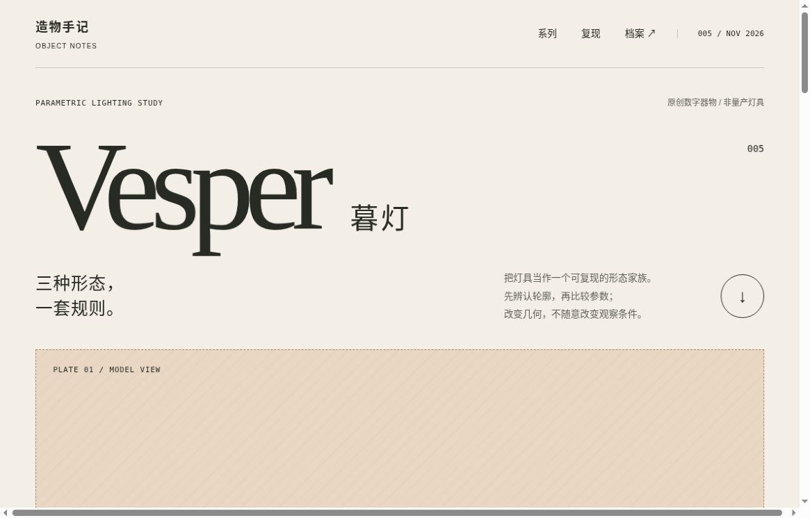
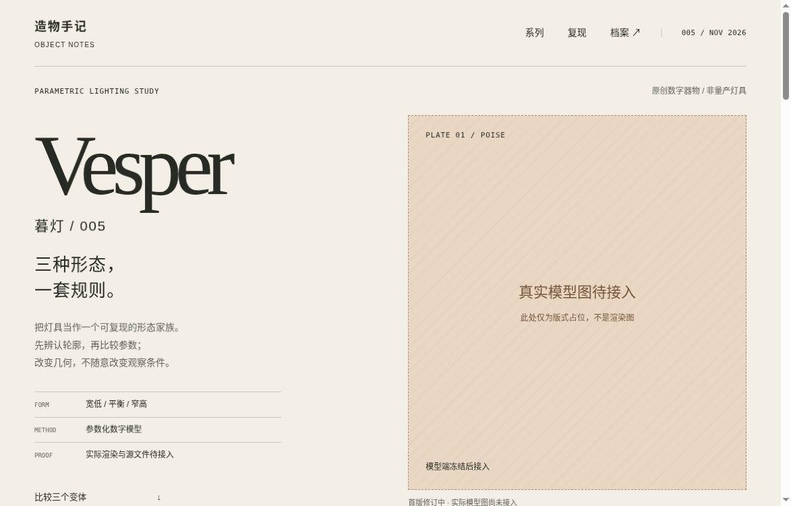
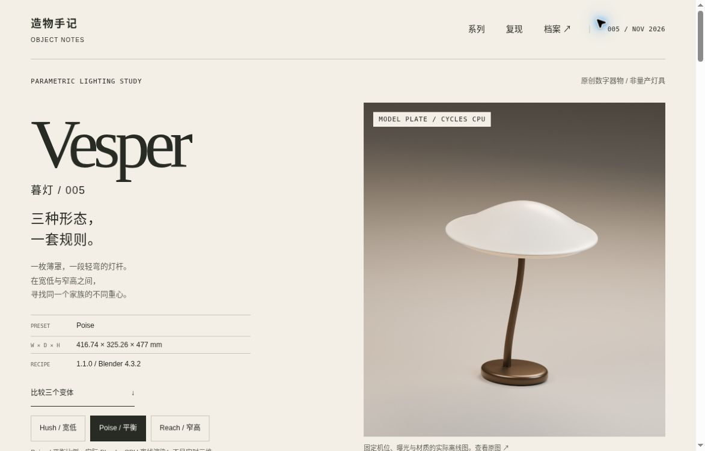
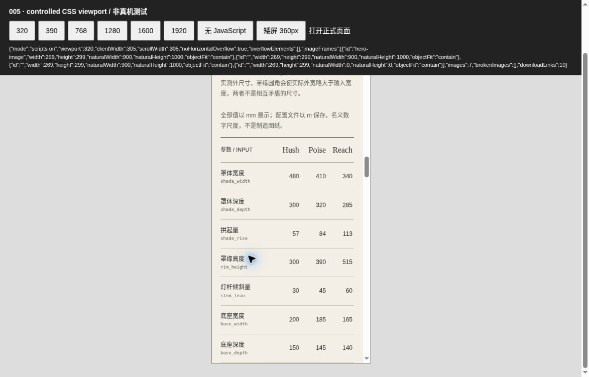
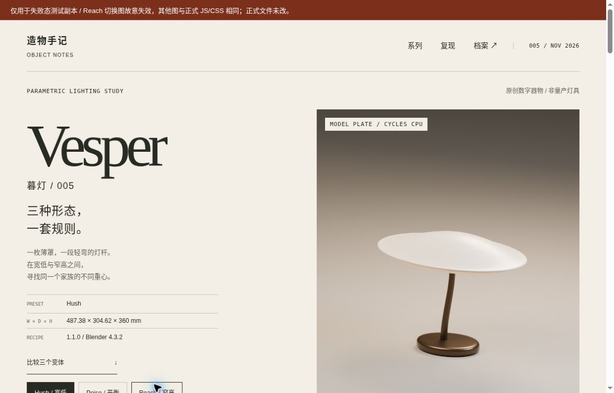

OBJECT NOTES 005 / WEB DESIGN CASE
不只是看见一盏灯。
还要知道它怎样变成三盏。
005 的独立网页目标是产品规格图录。它不沿用“全屏模型＋外围工具”的模式，而是让相同条件下的几何差异、参数来源、源文件与验证边界成为页面的主要内容。
实际模型 1.1.0 已接入：产品规格图录、三个真实几何变体、可复现源包和独立 3D 观察器均已归档。以下记录首版、检索、修订与实际浏览器复检；不代表真机、完整无障碍或 GPU 认证。
01 / 从字标主导，到产品与规格并置
首版暖纸与大字标建立了辨识度，但标题把模型推到了首屏下方。约 1174×750 视窗的实际浏览器截图只能看见图像占位上部；同时 100vw 全幅色块造成了横向滚动。修订没有简单缩小所有元素，而是改为标题/说明左、整幅竖版模型图右，并把复现章节约束在内容宽度内。




首图实际捕获为 1165×746，第二图为 1173×751，并非像素级相同条件。这些图片用于网页布局的前后证据，不用于评价模型精度或灯光质量。最终成品截图在实际图、尺寸与文件接入后单独记录，避免混用不同阶段。
02 / 真正观察了什么，决定不照搬什么
- Flos / Bellhop
- 实际读到技术图、物理/光学/电气分组与分类下载，浏览器打开并观察产品图与文字并列。采用按用途命名档案、区分观感和证据；不移植真实商业灯具的功率/IP指标。
- Muuto / Ease
- 实际读到尺寸、材料、事实表、产品图/场景图和3D资料分类；提取正文含模板占位与不相符护理内容，不能据此宣称完整视觉评审。采用图片用途标签和同版数据核对，不借用其图像或文案。
- Wästberg+ / Pawson
- 实际读到 Discover、Specs & Downloads、Gallery 以及材料与光关系的分章叙事。采用感受层与数值层分开；具体产品页读取失败，不推断其完整布局，也不复制其器物轮廓。
访问日期：2026-11-01。设计借鉴是信息组织方法，不是复制产品、代码、图片、商标或字体。所存原站截图仅作为内部研究记录，不进入交付网页资产。
03 / 用设计约束保证诚实
- 三变体的 beauty 图使用相同相机、材质与曝光；网页不把它们缩成同高后声称尺寸可以比较。
- 输入参数与网格包围盒实际外尺寸分行呈现。圆角外扩造成的差异明确解释，不把两种数值混用。
- 所有正文、规格与下载在基础 HTML 中；JavaScript 只增强离线图切换，不控制资料的可达性。
- 先预加载，成功后才同步图、alt、型号、规格与下载。失败保留最后成功视图；如果首页根本未加载成功，就直接说明没有可保留的图。
- 固定条件、可变量、输入合法性、几何门禁和人工审美评价分开，不把一种通过状态包装成所有通过。
04 / 复检证据
真实云端浏览器已检查 320 / 390 / 768 / 1280 / 1600 / 1920 CSS 视口、键盘切换、无 JavaScript 阅读与原生展开项、两种真实图片 404 故障及恢复。根线程另开标签独立复查。静态代码与 10 项假 DOM 单元检查是补充证据，不代替浏览器或屏幕阅读器实测。真实手机、200% 缩放、完整屏幕阅读器与 GPU 尚未验证。





05 / 带到下一轮
先定义读者要比较的字段，再画界面。让一个视觉决定对应一个可验证任务：大字负责身份、同机位图负责差异、矩阵负责核查、固定条件负责复现。更复杂的三维交互不是本轮目标，完整可信的阅读路径才是。
2026.11.01 / VESPER WEB 2.0 · 已接入与限定范围复检回到暮灯图录 ↑